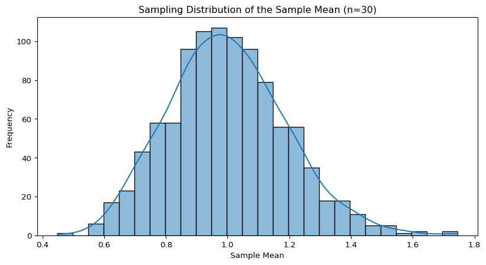

AI Basics with AK
Season 03 - Introduction to Statistics
Arun Koundinya Parasa
Episode 08 - Confidence Intervals
Central Limit Theorem Recap
Central Limit Theorem (Intuition)
If we:
Take independent samples
From any distribution (Uniform, Binomial, etc.)
With finite variance
Then:
The distribution of the sample mean becomes approximately
Normal as sample size increases.
This property is fundamental when constructing confidence intervals, especially for large samples.
Why CLT Matters for Confidence Intervals
Normal Approximation: Due to the CLT, we can use the normal distribution to approximate the sampling distribution of the sample mean.
Foundation for Inference: CLT provides the basis for making inferences about the population from the sample.
Confidence Intervals for Means: The normality assumption (thanks to CLT) allows us to calculate confidence intervals for the sample mean, even if the population distribution is unknown.
Sample Size Impact: Larger samples yield more reliable confidence intervals, aligning with the CLT’s implication of normality.
Visualizing the Transition
Introduction to Confidence Intervals
Confidence intervals (CIs) provide a range of plausible values for an unknown population parameter.
They quantify the uncertainty around the sample estimate.
In this episode, we’ll explore how to calculate, interpret, and visualize confidence intervals.
What is a Confidence Interval?
A confidence interval gives an estimated range of values likely to include an unknown population parameter.
For example, a 95% confidence interval means that if we repeated the sampling many times, about 95% of those intervals would contain the true parameter.
Components of a Confidence Interval
- Point Estimate: Usually the sample mean or proportion.
- Margin of Error: Reflects variability and the confidence level.
- Confidence Level: Commonly 90%, 95%, or 99%. \[\text{CI} = \text{Point Estimate} \pm \text{Margin of Error}\]
Calculating Confidence Intervals for the Mean
When population standard deviation (\(\sigma\)) is known, use the normal distribution.
When \(\sigma\) is unknown and sample size is small, use the t-distribution.
\[\text{Margin of Error} = z_{\alpha/2} \times \frac{\sigma}{\sqrt{n}} \quad \text{or} \quad t_{\alpha/2, df} \times \frac{s}{\sqrt{n}}\]
Visualizing Confidence Intervals
Final Reflection
Confidence intervals are more than just ranges.
They embody our uncertainty, variability, and trust in data.
Larger samples lead to narrower intervals, revealing more precision.
The shape of data influences the width—a subtle dance of variability and confidence.
Deepen your intuition through visualization, and let these concepts guide your understanding.